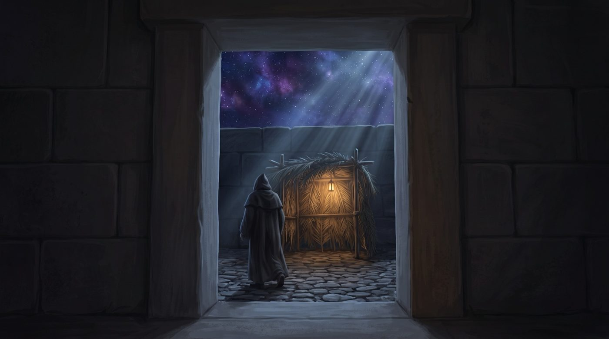
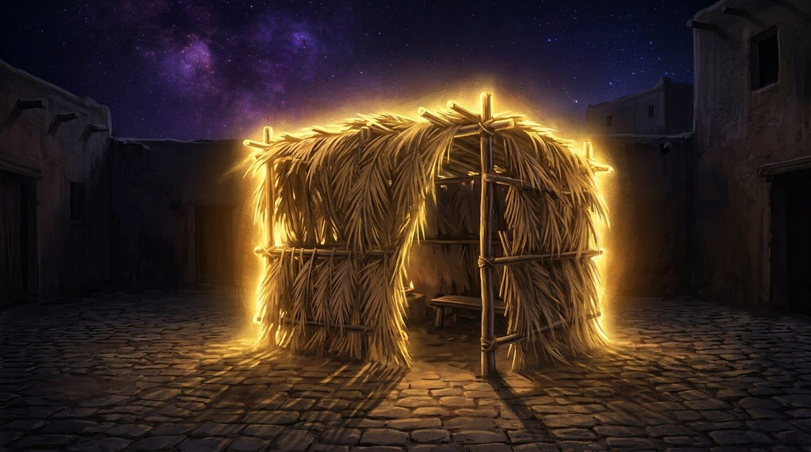

À l'ombre du Makom
Cinq jours seulement séparent la Neïla de la première nuit sous la soukka. Le Sfat Emet explique ce passage par une phrase qui surprend au sortir de Kippour : celui qui revient vers D.ieu n'a pas de place, et c'est D.ieu qui lui en donne une, la soukka, à l'ombre de Celui que la tradition appelle Makom, le Lieu.
La sortie de Kippour laisse un sentiment particulier. On a jeûné, on a tenu, la Neïla s'est achevée sur le son du chofar, et quatre jours plus tard on plante des piquets dans une cour et on s'apprête à vivre dehors. L'enchaînement est si rapide qu'on ne s'interroge plus forcément. Mais le Sfat Emet, lui, l'interroge, et il commence son enseignement de l'année 5636 par cette question exacte : pourquoi Souccot vient-il après Roch Hachana et Kippour ?
Sa réponse tient en une ligne, et elle projette la thématique du sujet : כִּי הַבַּעֲלֵי תְּשׁוּבָה אֵין לָהֶם מָקוֹם וְהַקָּדוֹשׁ בָּרוּךְ הוּא נוֹתֵן לוֹ מָקוֹם וְהוּא הַסּוּכָּה (ki habaalei techouva ein lahem makom vehaKadoch Baroukh Hou noten lo makom vehou hasoukka), « car ceux qui font techouva n'ont pas de place, et le Saint béni soit-Il leur donne une place, et c'est la soukka ».
Cette phrase étonne quand on vient d'étudier le chiour de la semaine dernière. Nous y avions suivi le même auteur, dans son enseignement de Chabbat Chouva, affirmant que le point d'Israël demeure à sa place chez celui-là même qui a fauté, que rien ne l'avait déplacé, et que revenir consistait à se remettre à un endroit qu'on n'avait jamais perdu. Cinq jours plus tard, le même maître écrit que celui qui revient n'a pas de place.
Comment peut-il dire les deux ? La réponse tient à ce que le mot place, makom, désigne deux choses différentes. Il y a le point interne déposé dedans, qui n'a pas bougé et vers lequel on revient. Et il y a le lieu où l'on se tient une fois revenu, l'endroit d'où l'on vit, et celui-là, le Sfat Emet le déclare absent. Car on peut avoir retrouvé son point d'équilibre et n'avoir nulle part où le vivre.
C'est pourquoi les jours qui suivent Kippour ont une fragilité particulière. On a pris pendant le jeûne une résolution précise, une prière plus attentive, une parole qu'on ne dira plus, et quatre jours plus tard on sait ce qu'on a décidé sans savoir où le déposer, dans quelle journée, dans quelle maison. Le Sfat Emet ajoute, quelques mots plus loin, que le peuple d'Israël se trouve alors dans la condition de ceux qui reviennent, et qu'ils יוֹשְׁבִין בְּצִלּוֹ שֶׁל מָקוֹם (yochvin betsilo chel Makom), « s'assoient à l'ombre du Makom ». Or le mot qu'il emploie pour dire « l'endroit », Makom, est l'un des Noms par lesquels la tradition désigne le Créateur. Celui qui n'a pas de place reçoit donc la sienne à l'ombre de Celui qui s'appelle le Lieu.
Avec l'aide du Ciel et de nos maîtres, nous proposons dans ce chiour de suivre le mot makom tout au long de la fête. Le midrach nous dira d'abord pourquoi D.ieu est appelé Makom, et ce que signifie recevoir une place de Celui qui porte ce nom. La halakha de la soukka traduit ce don en un geste concret, puisqu'il faut quitter sa maison pour le recevoir, et le verset lui donne un but : savoir. Ce savoir, le Sfat Emet en fait la mesure de la place reçue, qui dépasse ce que nos actes nous vaudraient ; et parce qu'elle n'est pas méritée, cette place a besoin d'être protégée. Le Ari Z"L expliquera pourquoi cette protection nous entoure au lieu d'entrer en nous : elle est une lumière trop grande pour le récipient, et une étreinte qui prolonge la remontée de Kippour. Nous comprendrons alors pourquoi la fête s'appelle le temps de notre joie, et pourquoi la délivrance finale est promise sous la forme d'une cabane relevée.
• Celui qui n'a pas d'endroit
• Le Nom qui veut dire endroit
• Sortir de chez soi pour recevoir un endroit
• L'endroit qu'on ne mérite pas
• Délivré, puis protégé à l'ombre de l'endroit
• L'endroit qui entoure
• L'endroit de l'étreinte
• La joie d'avoir un endroit
• La soukka relevée, endroit promis
Le nom de Makom donné à D.ieu vient d'un midrach sur la nuit qui précède le rêve de Yaakov. Le midrach s'arrête sur trois mots du récit de sa fuite vers 'Haran : וַיִּפְגַּע בַּמָּקוֹם (vayifga bamakom), « et il rencontra le lieu » (Bereshit 28:11). Le texte ne dit pas quel lieu. Il emploie l'article comme si le lieu était connu, alors que Yaakov est en fuite, sans destination précise, et qu'il s'arrête là parce que le soleil s'est couché.
Rav Houna, au nom de Rabbi Ami, pose alors la question de vocabulaire : מִפְּנֵי מָה מְכַנִּין שְׁמוֹ שֶׁל הַקָּדוֹשׁ בָּרוּךְ הוּא וְקוֹרְאִין אוֹתוֹ מָקוֹם (mipné ma mekhanin chemo chel haKadoch Baroukh Hou vekorin oto Makom), « pourquoi désigne-t-on le Nom du Saint béni soit-Il en L'appelant Lieu ? ». Et la réponse : שֶׁהוּא מְקוֹמוֹ שֶׁל עוֹלָם וְאֵין עוֹלָמוֹ מְקוֹמוֹ (chehou mekomo chel olam veein olamo mekomo), « parce qu'Il est le lieu du monde, et que Son monde n'est pas Son lieu » (Bereshit Rabba 68:9).
Pour tout objet, le lieu vient avant lui et le contient : le livre est dans l'armoire, l'armoire dans la pièce, la pièce dans la maison. Le midrach refuse d'appliquer ce schéma au Créateur. C'est Lui qui contient le monde, et le monde ne Le contient pas. La preuve citée vient de la fente du rocher où Moché est placé : הִנֵּה מָקוֹם אִתִּי (hiné makom iti), « voici un lieu auprès de Moi » (Chemot 33:21). Le verset dit que le lieu est « avec Moi » ; c'est le lieu qui se tient auprès de D.ieu et qui dépend de Lui.
Rabbi Its'hak prolonge l’analyse par un second mot. Le verset dit מְעֹנָה אֱ-לֹהֵי קֶדֶם (meona E-lokei kedem), « une demeure, le D.ieu des temps anciens » (Devarim 33:27), et l'on ne sait pas d'emblée s'Il est la demeure de Son monde ou si Son monde est Sa demeure. Le psaume tranche : ה' מָעוֹן אַתָּה (Hachem maon ata), « Hachem, Tu es une demeure » (Tehilim 90:1). Il est l'habitation, et certainement pas l'habitant.
Ainsi, quand le Sfat Emet écrit que D.ieu donne une place à celui qui revient, il ne décrit pas l'attribution d'un bien. Ici, le donateur et le don portent le même nom : recevoir un lieu où se tenir signifie être logé en Celui qui est le lieu de tout. La soukka est certes une cabane, mais elle devient le signe visible de cet hébergement.
Remarquons que Yaakov est l'homme sans place par excellence. Il a quitté la maison de son père, il n'est pas encore arrivé chez Lavan, il dort dehors avec une pierre sous la tête. Le texte lui fait rencontrer le Makom précisément là, dans l'intervalle où il n'a rien. Et c'est là qu'il reçoit la vision de l'échelle et la promesse du retour (D.ieu promet en effet à Yaakov, à ce moment-là, qu'Il le ramènera dans le pays de ses pères, Bereshit 28:15).
Celui qui revient vers D.ieu se trouve dans la situation de Yaakov en fuite. Il n'a pas de place au sens où il ne dispose d'aucun terrain qui lui appartienne. Il en reçoit une au sens où il est accueilli dans Celui qui porte ce nom. Les deux affirmations du Sfat Emet cessent alors de se contredire lorsqu'on entend le mot dans ces deux registres.
Le lieu qu'on reçoit porte le Nom de Celui qui le donne.
Concrètement, comment reçoit-on une place de Celui qui s'appelle le Lieu ? La halakha répond par un geste : sortir de chez soi. La michna qui ouvre le traité Soukka fixe une hauteur maximale à la cabane, vingt amot (environ 10 mètres), et la guemara en donne deux raisons (Soukka 2a).

Pour Rabba, la limite vient du verset לְמַעַן יֵדְעוּ דֹרֹתֵיכֶם (lemaan yedeou dorotekhem), « afin que vos générations sachent » : au-delà de vingt amot, l'œil n'atteint plus le toit de branchages, et l'homme ne sait plus qu'il est assis dans une soukka. Pour Rava, elle vient d'une phrase qui résume l’essence de la mitsva : צֵא מִדִּירַת קֶבַע וְשֵׁב בְּדִירַת עֲרַאי (tsé midirat keva vechev bedirat araï), « sors de l'habitation permanente et assieds-toi dans une habitation provisoire ». Au-delà d'une certaine hauteur, l'homme construit nécessairement un toit stable, et une construction stable cesse d'être une soukka. Selon Rava, la cabane devient invalide par excès de solidité.
Celui qui reste dans sa maison a une place, la sienne, celle qu'il a payée et qu'il entretient. Il n'est donc pas en position de recevoir celle qui se donne. Le geste de sortir fait plus qu'un exercice d'humilité symbolique, il crée la condition matérielle du don, puisque pendant sept jours l'endroit d'où l'on vit n'est pas le sien. Celui qui revient, disait le Sfat Emet, n'a pas de place ; la hala’ha le met concrètement dans cette situation pendant sept jours.
Le verset qui fonde la fête emploie d'ailleurs une forme verbale source d’enseignement : לְמַעַן יֵדְעוּ דֹרֹתֵיכֶם כִּי בַסֻּכּוֹת הוֹשַׁבְתִּי אֶת בְּנֵי יִשְׂרָאֵל (lemaan yedeou dorotekhem ki vassoukot hochavti et bené Yisrael), « afin que vos générations sachent que J'ai fait asseoir les enfants d'Israël dans des cabanes » (dans le désert en l'occurrence) (Vayikra 23:43). Le verbe hochavti est causatif, « J'ai fait asseoir » : au désert déjà, la place était attribuée et non pas choisie.
Les maîtres discutent de ce qu'étaient ces cabanes. Pour Rabbi Eliezer, il s'agissait des nuées de gloire qui entouraient le camp ; pour Rabbi Akiva, de huttes réellement construites (Soukka 11b). Les nuées enveloppaient le camp sans que personne n’ait rien à faire, tandis que les huttes, il fallait les construire. Il me semble que la soukka que nous bâtissons tient des deux, puisqu'on la construit de ses mains et que sa fonction est de nous entourer.
Le verset donne lui-même le but de la mitsva, « afin qu'ils sachent », celui-là même dont Rabba tirait la limite de hauteur. Le Sfat Emet l'explique dans le même enseignement : כִּי בַּסֻּכּוֹת נִמְשָׁךְ הַדַּעַת לִבְנֵי יִשְׂרָאֵל (ki vassoukot nimchakh hadaat livné Yisrael), « car à Souccot la connaissance est attirée sur les enfants d'Israël ». On sort de chez soi pour apprendre qu'on est logé, et ce savoir, le Sfat Emet en fait la mesure même de la place reçue.
Une cabane trop bien bâtie cesse d'être une soukka.
Si cette place est donnée, qui la reçoit, et dans quelle mesure ? Dans le texte du Sfat Emet, la phrase qui suit « ils s'assoient à l'ombre du Makom » répond aux deux questions, et elle renverse la notion habituelle du mérite : וּכְפִי מַה שֶּׁיּוֹדֵעַ הָאָדָם שֶׁאֵין לוֹ מָקוֹם מִצַּד עַצְמוֹ נוֹתֵן לוֹ הַקָּדוֹשׁ בָּרוּךְ הוּא מָקוֹם (oukhfi ma cheyodea haadam cheein lo makom mitsad atsmo noten lo haKadoch Baroukh Hou makom), « et selon ce que l'homme sait qu'il n'a pas de place par lui-même, le Saint béni soit-Il lui donne une place ».
La mesure du don est ainsi fonction de la lucidité de nos dénuements plutôt que du mérite accumulé. Celui qui sort de Kippour en pensant avoir gagné sa place par son jeûne et ses prières reçoit à la mesure de ce qu'il croit avoir ; celui qui sait qu'il ne tient debout que par le pardon irrationnel divin reçoit davantage. Et le Sfat Emet précise aussitôt la conséquence : וּמָקוֹם זֶה גָּבוֹהַּ מִמַּה שֶּׁזּוֹכֶה בְּמַעֲשָׂיו (oumakom zé gavoha mima chezokhé bemaassav), « et ce lieu est plus élevé que ce qu'il obtient par ses actes ».
Ainsi D.ieu nous promet une place au-dessus de ce que les actes valent. La formule contredit l'intuition religieuse la plus solide, qui fait correspondre le rang à la conduite. Le Sfat Emet ne suggère pas que les actes seraient indifférents et sans conséquences. Il dit que le lieu obtenu par eux et le lieu qui est donné lorsque l'homme revient à D.ieu ne se situent pas au même étage, et que le second dépasse le premier.
Il cite à l'appui l'adage du Talmud : מָקוֹם שֶׁבַּעֲלֵי תְּשׁוּבָה עוֹמְדִין צַדִּיקִים גְּמוּרִים אֵינָם עוֹמְדִין (makom chebaalei techouva omdin tsadikim guemourim einam omdin), « à la place où se tiennent ceux qui reviennent, les justes accomplis ne se tiennent pas » (Berakhot 34b). Et la guemara en donne la preuve par un verset d'Yechayahou : שָׁלוֹם שָׁלוֹם לָרָחוֹק וְלַקָּרוֹב (chalom chalom lara'hok velakarov), « chalom, chalom, à celui qui est loin et à celui qui est proche » (Yechayahou 57:19), et elle relève l'ordre des mots, le lointain d'abord, le proche ensuite.
Le Sfat Emet en donne la raison : כִּי הַבַּעֲלֵי תְּשׁוּבָה יוֹשְׁבִין בְּמָקוֹם הַנִּיתָּן לָהֶם מִשָּׁמַיִם (ki habaalei techouva yochvin bemakom hanitan lahem michamayim), « car ceux qui reviennent siègent dans un lieu qui leur est donné du Ciel ». Le juste accompli occupe la place qu'il a bâtie, comme la maison que l'on quitte à Souccot, et une place bâtie a la hauteur de son bâtisseur, elle est donc limitée. Celui qui n'a rien bâti reçoit une place dont la hauteur ne dépend pas de lui, et qui touche à l'illimité.
Cet enseignement ne fait pas du dénuement une vertu à cultiver, et personne n'est invité à moins agir pour recevoir davantage. Le Sfat Emet parle d'un savoir, qu'il ne faut pas confondre avec une stratégie. Il s'agit de savoir ce qu'on a et ce qu'on n'a pas, au moment précis où l'on sort du jour du jugement avec un pardon qu'on n'a pas fabriqué, et qui nous a été accordé.
Ce savoir-là est d'ailleurs le seul acquis solide des dix jours. On n'a pas nécessairement acquis de vertu nouvelle en un jour de jeûne. On a appris, si tout s'est bien passé, qu'on tient debout par autre chose que par ses propres forces, et Souccot commence exactement là.
La mesure du lieu donné, c'est de savoir qu'on n'en a pas.
Une place qu'on n'a pas gagnée a pourtant une faiblesse. Si Kippour a réellement délivré le pardon attendu, pourquoi faudrait-il encore une protection quatre jours après ? Le Sfat Emet répond dans la suite immédiate de son texte.
Il explique d'abord ce que les dix jours ont opéré : בְּרֹאשׁ הַשָּׁנָה וְיוֹם הַכִּפּוּרִים נִגְאָלִין בְּנֵי יִשְׂרָאֵל מִיֵּצֶר הָרָע בְּחֶסֶד עֶלְיוֹן (beRoch Hachana veYom HaKipourim nigalin bené Yisrael miyetser hara be'hessed elyon), « à Roch Hachana et à Kippour, les enfants d'Israël sont délivrés du penchant au mal par une bonté d'en haut ». Puis vient la nuance : וְאַחַר זֶה צְרִיכִין הֲגָנָה יוֹתֵר (ve'a'har zé tserikhin hagana yoter), « et après cela ils ont besoin d'une protection supplémentaire ».
Et il en donne la raison : כִּי הַתִּיקּוּן שֶׁאֵינוֹ בָּא מִצַּד זְכוּת עַצְמוֹ רוֹדְפִין אַחֲרָיו הַקִּטְרוּגִים (ki hatikoun cheeino ba mitsad zekhout atsmo rodfin a'harav hakitrouguim), « car une réparation qui ne vient pas du mérite propre, les accusateurs la poursuivent ».
Les accusateurs (kitrouguim) sont, dans la langue des maîtres, les forces qui plaident contre l'homme devant le tribunal d'en haut. Leur argument a aussi une traduction très concrète. Ce qu'on a obtenu par son travail, on le défend sans peine, parce qu'on sait ce qu'il a coûté. Ce qu'on a reçu gratuitement reste contestable, et la contestation vient souvent de l'intérieur. Une semaine après le jeûne, une voix murmure que rien n'a vraiment changé, que le pardon était une émotion de circonstance, que tout reprendra comme avant. Elle ne s'attaque pas à nos mérites ; elle vise précisément ce que nous n'avons pas mérité.
C'est pourquoi, poursuit le Sfat Emet : לָכֵן הַקָּדוֹשׁ בָּרוּךְ הוּא מֵגִין עָלֵינוּ אַחַר כָּךְ בַּסּוּכָּה (lakhen haKadoch Baroukh Hou meguin alénou a'har kakh bassoukka), « c'est pourquoi le Saint béni soit-Il nous protège ensuite par la soukka ». Il lit alors la formule de la berakha בָּרוּךְ פּוֹדֶה וּמַצִּיל (baroukh podé oumatsil), « béni soit Celui qui délivre et qui sauve », comme une séquence de calendrier : Il délivre à Roch Hachana et à Kippour, Il sauve à Souccot, afin que les accusateurs ne reviennent pas.
Le même enseignement donne à cette protection son nom biblique, l'ombre. Sur le verset כִּי בְּצֵל הַחָכְמָה בְּצֵל הַכָּסֶף (ki betsel ha'hokhma betsel hakassef), « car à l'ombre de la sagesse, à l'ombre de l'argent » (Kohelet 7:12), le Sfat Emet distingue deux protections qui viennent d'une bonté d'en haut. L'ombre de la sagesse est la soukka, selon le verset ה' צִלְּךָ (Hachem tsilekha), « Hachem est ton ombre » (Tehilim 121:5). L'ombre de l'argent, kessef, vient du mot qui dit le désir, nikhsof : elle protège l'homme אַף שֶׁאֵינוֹ מְתֻקָּן כָּרָאוּי (af cheeino metoukan karaouï), « même s'il n'est pas réparé comme il convient », par le seul fait que sa volonté aspire réellement vers son Père qui est aux cieux, et le Sfat Emet rattache cette seconde ombre au loulav. Les deux ombres réunies disent que la protection de la fête ne suppose pas un homme achevé : la soukka le couvre, et son désir le couvre aussi. C'est ce que veut dire s'asseoir « à l'ombre du Makom ».
Le Sfat Emet distribue enfin sur les trois moments de Tichri, les trois choses sur lesquelles, selon la michna, le monde se maintient, la vérité, le jugement et la paix (Pirké Avot 1:18). Roch Hachana relève de la vérité, puisque c'est là que chacun reçoit ce qui lui revient réellement. Kippour est le jugement proprement dit. Et Souccot relève de la paix, selon la formule que nous disons chaque soir, פּוֹרֵס סוּכַּת שָׁלוֹם (porès soukkat chalom), « Il étend une cabane de paix ». La paix est ici le nom de cette protection.
Ce qu'on n'a pas mérité a besoin d'être protégé pour tenir.
Cette protection a une forme particulière : la soukka ne s'installe pas dans l'homme, elle l'entoure, comme une ombre. Pourquoi une protection qui entoure, plutôt qu'une force déposée en nous ? Une place plus haute que nos actes est aussi plus grande que nous, et le Ari Z"L explique comment on reçoit ce qu'on ne peut pas contenir. Il consacre à la fête une porte du Pri Etz Haim, Chaar 'Hag HaSoukkot, divisée en quatre chapitres. Au troisième chapitre, il distingue deux manières dont une lumière parvient à un récipient. Dans sa langue, la lumière désigne l'influence que D.ieu fait descendre, et le récipient (keli) ce qui la reçoit.

Il y a la lumière qui entre, אוֹר פְּנִימִי (or penimi), la lumière intérieure, celle que le récipient contient et qui se mesure à sa contenance. Et il y a la lumière qui ne peut pas entrer, trop vaste pour la paroi qui devrait la retenir, et qui se tient alors autour : אוֹר מַקִּיף (or makif), la lumière qui entoure.
Le Ari Z"L écrit, à propos de la Malkhout, l'attribut de la royauté, le plus bas des attributs divins, qui reçoit de tous les autres : הַחֲסָדִים הַנִּכְנָסִים בָּהּ בְּז' יְמֵי הַסּוּכָּה הֵם הַמַּקִּיפִים, כִּי הַפְּנִימִים כְּבָר נִכְנְסוּ מִקּוֹדֶם (ha'hassadim hanikhnassim ba bechiva yemé hasoukka hem hamakifim, ki hapenimim kevar nikhnessou mikodem), « les bontés qui lui parviennent durant les sept jours de la soukka sont celles qui entourent, car celles qui entrent sont déjà entrées auparavant ». Et il conclut sur la fonction de la cabane elle-même : כִּי הַסּוּכָּה הוּא סוֹד אוֹר מַקִּיף (ki hasoukka hou sod or makif), « car la soukka est le secret de la lumière qui entoure ».
Ce qui devait entrer, est entré pendant les dix jours, jusqu'à la Neïla, et durant les quatre jours qui séparent Kippour de Souccot. Ce qui vient maintenant ne peut plus entrer, et c'est pour cela qu'on s'assoit dedans. C'est, dans la langue du Ari Z"L, la place dont parlait le Sfat Emet : plus haute que ce que les actes ont construit, elle ne peut pas tenir dans le récipient que ces actes ont formé, et elle se tient donc autour de lui.
Le vase des chiourims de Devarim se retourne ici. Toute l'année, le travail consiste à disposer le récipient, parce que la lumière ne manque jamais et que la paroi manque souvent. Sept jours par an, l'ordre s'inverse. Il arrive une lumière qu'aucune paroi ne retiendra, et la seule manière d'en recevoir quelque chose est d'entrer à l'intérieur d'elle.
Le Sfat Emet dit la même chose à partir des mitsvot de la fête. Dans le même enseignement de 5636, il écrit : סוּכָּה וְלוּלָב כְּמוֹ צִיצִית וּתְפִלִּין (soukka veloulav kemo tsitsit outefilin), « la soukka et le loulav sont comme les tsitsit et les tefilin ». La soukka, comme les tsitsit qui enveloppent le corps, est une lumière qui entoure ; les quatre espèces, comme les quatre compartiments des tefilin, font pénétrer la connaissance à l'intérieur de l'homme. La fête réunit ainsi les deux gestes, celui qui entoure et celui qui fait entrer.
D'ailleurs, celui qui entre dans sa soukka en cherchant une émotion intérieure cherche du mauvais côté. Ce qui se donne là ne se loge pas dans le sentiment, il se tient autour du corps qui s'assoit. On peut y être distrait, fatigué, occupé de la pluie qui menace, et recevoir tout de même, parce que la mitsva consiste à s'asseoir sous le toit de branchages et que ce qui est reçu ne dépend pas de la qualité de l'attention.
Sept jours par an, on ne remplit pas le vase : on s'assoit dans la lumière.
Au premier chapitre de la même porte, le Ari Z"L donne à cette lumière qui entoure un nom plus concret, et il la rattache directement à Kippour : מִן מוֹצָאֵי יוֹם הַכִּפּוּרִים עַד יוֹם שְׁמִינִי עֲצֶרֶת, הַכֹּל הוּא סוֹד חִיבּוּק הַיָּמִין, וִימִינוֹ תְּחַבְּקֵנִי (min motsaé Yom HaKipourim ad yom Chemini Atseret, hakol hou sod 'hibouk hayamin, vimino te'habekeni), « depuis la sortie de Kippour jusqu'au jour de Chemini Atseret, tout est le secret de l'étreinte de la droite, et sa droite m'enlace ».
Le verset cité vient du cantique des cantiques, Chir HaChirim (2:6), qui décrit l’amour et l’intimité entre D.ieu et le peuple juif. Il décrit l'étreinte comme un geste qui ne remplit pas, et qui entoure. Celui qu'on étreint ne reçoit rien en lui, il est entouré ; la lumière qui entoure prend ici la forme d'une relation.
Cette étreinte fait suite à ce que Kippour a opéré. Au jour de Kippour, les rigueurs (guevourot) sont adoucies et la Malkhout remonte jusqu'au niveau supérieur d'Ima, la Mère, nom que la mystique donne à l'attribut de l'intelligence divine, pour recevoir d'elle directement. Pour Souccot, le Ari Z"L écrit : וְהִנֵּה בְּיוֹם הַכִּפּוּרִים, כְּבָר נִמְתְּקוּ הַגְּבוּרוֹת וְחָזְרָה לִהְיוֹת פָּנִים בְּפָנִים, וְעַתָּה הִיא צְרִיכָה אֶל הַחֲסָדִים גַּם כֵּן (vehiné beYom HaKipourim, kevar nimtekou haguevourot ve'hazra lihyot panim bepanim, veata hi tserikha el ha'hassadim gam ken), « et voici qu'à Kippour, les rigueurs ont déjà été adoucies et elle est revenue à se tenir face à face, et maintenant elle a besoin des bontés également ». Et il précise d'où viennent ces bontés : וְכָל אֵלּוּ הַחֲסָדִים הֵם שֶׁלּוֹקַחַת מֵאִמָּא (vekhol elou ha'hassadim hem cheloka'hat meIma), « et toutes ces bontés, elle les prend de la Mère ».
Kippour a donc opéré une remontée et un face-à-face (panim bepanim). Mais se tenir face à face ne suffit pas, il manque encore les bontés. Deux personnes qui se réconcilient se regardent d'abord en face, et l'étreinte vient ensuite. Ce qui devait suivre Kippour, le Ari Z"L le nomme précisément : c'est une étreinte, et elle occupe tout l'intervalle qui va de la sortie du jeûne jusqu'à Chemini Atseret, qui formulera l’union concrète.
Les deux fêtes procèdent ainsi de la même manière. À Kippour, la Malkhout reçoit directement de la source ce qui descend d'ordinaire par la chaîne des attributs ; à Souccot, ce qui se reçoit d'ordinaire au-dedans est reçu autour de soi. Dans les deux cas, celui qui reçoit ne fabrique rien, il se trouve en position de recevoir ce qu'il ne pourrait pas produire.
La remontée de Kippour appelait une suite, et cette suite est une étreinte.
La fête que le Sfat Emet plaçait sous le signe de la paix porte dans la liturgie un nom qui la distingue de toutes les autres : זְמַן שִׂמְחָתֵנוּ (zeman sim'haténou), le temps de notre joie. Pessa'h est le temps de notre liberté, Chavouot le temps du don de notre Torah, et seul Souccot reçoit la joie comme définition.
Pourtant la joie ne vient pas au sortir immédiat du pardon, le soir de Kippour, quand le jeûne se rompt et que le poids tombe. Elle arrive quelques jours plus tard, une fois la cabane montée, une fois que l'on s'y est assis.
La joie de Souccot ne célèbre donc pas l'effacement de la faute, qui s'est joué à Kippour. Elle accompagne le fait d'avoir un endroit où se tenir. Le Sfat Emet donne, dans le même enseignement, une parabole qui éclaire cette différence : un roi fait entrer un invité dans sa maison, et l'invité y trouve deux choses, ce dont il a besoin, et le fait d'être dans le palais du roi ; le sage, dit-il, s'attache à la seconde. Il me semble qu'on peut y lire la distance entre Kippour et Souccot. Celui qui est pardonné a reçu ce dont il avait besoin. Celui qui s'assoit dans la soukka se trouve, en plus, dans la maison du Roi.
Cela explique aussi pourquoi la joie commandée n'est pas une humeur à produire. Personne ne peut décider de se réjouir, et l'injonction serait cruelle si elle portait sur un sentiment. Elle porte sur une situation : on ordonne de se réjouir à des gens qui viennent d'être installés chez le Roi des rois.
La guemara de Berakhot prouvait la place supérieure de ceux qui reviennent par un verset de paix, « chalom, chalom, à celui qui est loin et à celui qui est proche », et le Sfat Emet fait de Souccot la fête de la paix, du chalom. La paix est donc ce que reçoit celui qui revient, et la joie de Souccot est celle de l'avoir reçue.
Beaucoup aborderont la fête sans entrain, après trois semaines de tension. Ce manque d'élan n'empêche rien. La mitsva consiste à s'asseoir, à manger, à dormir sous le toit de branchages, et la lumière qui entoure entoure également celui qui ne ressent rien. Le sentiment viendra ou ne viendra pas, et il ne conditionne pas la réception.
Cette joie n'appartient pas en propre à Israël. Les soixante-dix taureaux offerts pendant la fête correspondent aux soixante-dix nations du monde (Soukka 55b), et la tradition y lit une intercession pour l'humanité entière. La place donnée à Israël s'étend ainsi, sept jours par an, jusqu'aux nations, et c'est cette extension que le prophète promet pour la fin des temps.
On ne commande pas une humeur : on installe quelqu'un quelque part, et la joie suit.
La promesse messianique aurait pu prendre l'image d'un palais, d'un temple achevé, d'une ville rebâtie. Le prophète choisit une cabane : בַּיּוֹם הַהוּא אָקִים אֶת סֻכַּת דָּוִיד הַנֹּפֶלֶת (bayom hahou akim et soukkat David hanofélet), « en ce jour-là, Je relèverai la cabane de David qui tombe » (Amos 9:11).
Au moment où l'on promet son relèvement, la royauté de David reçoit le nom de soukka plutôt que celui de maison ou de forteresse, du nom de l'habitation la plus précaire qui soit, et elle est dite tombante. La restauration finale porte le nom de ce qui ne tient pas debout.
Le Sfat Emet permet de comprendre ce choix. Si la place se donne à proportion de ce que l'on sait ne pas avoir, ce qui est tombé se trouve exactement dans la position de celui qui reçoit. Une maison solide n'a pas besoin d'être relevée. Le prophète promet de relever la cabane de David, et il la relève comme cabane, sans en faire un palais.
Le Sfat Emet ajoutait que la place donnée à celui qui revient est plus haute que celle que ses actes lui valent. Porté au terme de l'histoire, cet écart devient la mesure de ce qui attend un peuple dont l'essentiel du parcours aura consisté à tomber et à revenir. Sa hauteur finale ne se calculera pas sur le bilan de ses actes.
D.ieu est le lieu du monde, et le monde n'est pas Son lieu. Tant que l'histoire dure, cette vérité reste une affaire de foi, tenue par ceux qui s'assoient sept jours sous des branchages pour l'apprendre. Le jour promis est celui où elle deviendra une évidence partagée, où l'humanité entière saura de quel abri elle vivait sans le savoir, et où les nations qui recevaient déjà leur part par les soixante-dix taureaux l'apprendront en clair.
D'ici là, chaque année, on sort de sa maison sept jours pour s'asseoir sous des branchages, et l'on apprend à nouveau que notre place nous est donnée.
| בַּיּוֹם הַהוּא אָקִים | En ce jour-là, Je relèverai |
| אֶת סֻכַּת דָּוִיד הַנֹּפֶלֶת | la cabane de David qui tombe |
Amos 9:11
Chabbat Chalom et Moadim LeSim'ha !
Par B.A., à Saint-Mandé, 15 Tichri 5787 / 26 septembre 2026
Yehi Ratson. Qu'il nous soit donné, en entrant sous les branchages, de savoir ce que nous n'avons pas, et de recevoir pour cela une place plus haute que celle que nos actes nous vaudraient.
Et que ce qui nous entoure ces sept jours nous accompagne le reste de l'année.
| Torah | Talmud |
| Vayikra 23:42-43, l'ordre de s'asseoir dans les cabanes et le verbe causatif, Je les ai fait asseoir ; Bereshit 28:11 et 28:15, Yaakov qui rencontre le lieu et la promesse du retour ; Chemot 33:21, voici un lieu auprès de Moi ; Devarim 33:27, une demeure, le D.ieu des temps anciens ; Amos 9:11, la cabane de David relevée ; Yechayahou 57:19, paix au lointain et au proche ; Tehilim 90:1, Tu es une demeure ; Tehilim 121:5, Hachem est ton ombre ; Chir HaChirim 2:6, sa droite m'enlace ; Kohelet 7:12, l'ombre de la sagesse et l'ombre de l'argent. | Berakhot 34b, la place où les justes accomplis ne se tiennent pas et le verset qui la prouve ; Soukka 2a, la hauteur de vingt amot, afin qu'ils sachent (Rabba) et sors de l'habitation permanente (Rava) ; Soukka 11b, les nuées de gloire ou les cabanes réelles ; Soukka 55b, les soixante-dix taureaux pour les soixante-dix nations. |
| Mishna et Midrach | Mystique |
| Pirké Avot 1:18, le jugement, la vérité et la paix ; Bereshit Rabba 68:9, pourquoi le Nom du Saint béni soit-Il est Lieu, et la démonstration par les deux versets. | Ari Z"L, Pri Etz Haim, Chaar 'Hag HaSoukkot 1, de la sortie de Kippour à Chemini Atseret comme secret de l'étreinte, et les bontés prises de la Mère ; chapitre 3, les lumières des sept jours comme lumières qui entourent, et la soukka comme secret de la lumière environnante. |
| Hassidout | |
| Sfat Emet, Souccot 5636 : pourquoi Souccot suit Kippour, ceux qui reviennent n'ont pas de place, le don mesuré au savoir du dénuement, la place plus haute que les actes, la délivrance puis la protection, la vérité le jugement et la paix ; la soukka et le loulav comme les tsitsit et les tefilin, la connaissance attirée à Souccot ; le roi qui fait entrer un invité dans sa maison ; l'ombre de la sagesse et l'ombre du désir. Sfat Emet, Chabbat Chouva, le point d'Israël qui ne quitte pas sa place. |